Newton’s method
Agenda today
Newton’s method
Review method of moments
Reading:
- Kenneth Lange, Numerical Analysis for Statisticians, Section 11.2, 13.3
Logistics:
Newton’s method
Iterative method for finding local minimum/maximum of a function.
Also known as Newton-Raphson, after Isaac Newton and Joseph Raphson (Raphson published in 1690, Newton wrote a similar method in 1671 but didn’t publish until 1736)
Initial description is for finding zeros of a function
This turns out to be equivalent to an optimization problem/finding maxima of functions, as we need.
Notation
Start off with a one-dimenisonal parameter:
\(\theta\): The parameter, a scalar
\(\ell (\theta)\): The log likelihood at \(\theta\).
\(\ell'(\theta)\): The first derivative of the log likelihood at \(\theta\).
\(\ell''(\theta)\): The second derivative of the log likelihood.
What
Our goal: Find the value of \(\theta\) that maximizes \(\ell(\theta)\).
Given that we are at a point \(\theta_n\), one Newton step is given by
\[
\theta_{n+1} = \theta_n - \ell''(\theta_n)^{-1} \ell'(\theta_n)
\]
Newton’s method algorithm:
Start at a point \(\theta_0\)
Iterate \(\theta_{n+1} = \theta_n - \ell''(\theta_n)^{-1} \ell'(\theta_n)\) until some stopping criterion is reached.
Usually stop when the derivative, \(\ell'(\theta_n)\) is sufficiently close to zero.
Why
Suppose we want to maximze a quadratic:
\[
f(\theta) = a + b \theta + c \theta^2
\]
We can solve for the maximum/minimum analytically by setting the first derivative equal to 0:
\[
f'(\theta) = b + 2 c \theta
\]
If we want \(b + 2c \theta^\star = 0\), we take \(\theta^\star = -\frac{b }{2c}\)
Recast this result as a “step” from \(\theta_0\) instead of a single optimization:
We start at \(\theta_0\)
\(\theta_1\) should be \(-\frac{b}{2c}\)
We want to write \(\theta_1 = \theta_0 + ???\)
\[
\begin{align*}
\theta_1 &= \theta_0 + (\theta_1 - \theta_0) \\
&=\theta_0 -\frac{b}{2c} - \theta_0 \\
&=\theta_0 -\frac{b + 2c \theta_0}{2c} \\
&=\theta_0 -\frac{ f'(\theta_0)}{f''(\theta_0)}
\end{align*}
\]
since \(f'(\theta_0) = b + 2c\theta_0\) and \(f''(\theta_0) = 2c\)
Intuition for general, not-necessarily-quadratic functions:
We are not only dealing with quadratic functions, but we can approximate smooth, differentiable functions by quadratic functions.
Taylor approximation of \(\ell(\theta)\) around \(\theta_0\): \[
\ell(\theta) \approx \ell(\theta_0) + \ell'(\theta_0)(\theta - \theta_0) + \frac{1}{2} \ell''(\theta_0) (\theta - \theta_0)^2
\]
A Newton step finds an extreme point for the approximation.
Example 1: Normal mean
\[
x_1,\ldots, x_n \sim N(\theta, 1)
\]
Likelihood: \[
L(\theta) = \prod_{i=1}^n \frac{1}{\sqrt{2\pi}} \exp \left(-\frac{1}{2} (x_i - \theta)^2 \right)
\]
Log likelihood: \[
\ell(\theta) = \sum_{i=1}^n \left[ -\frac{1}{2} \log(2\pi)- \frac{1}{2} (x_i - \theta)^2\right]
\]
First derivative: \[
\ell'(\theta) = \sum_{i=1}^n (x_i - \theta)
\]
Second derivative \[
\ell''(\theta) = \sum_{i=1}^n (-1) = -n
\]
Newton “step”:
\[
\begin{align*}
\theta_1 &= \theta_0 -\ell'(\theta_0) / \ell''(\theta_0)\\
&= \theta_0 + \sum_{i=1}^n (x_i - \theta_0) / n \\
&= \sum_{i=1}^n x_i / n
\end{align*}
\]
This puts us at the maximum, as you can check by evaluating first and second derivatives.
Let’s look at the log likelihood and the Taylor approximation of the log likelihood:
x = c(1.1, 2.3, 3, 1.5)
theta_vec = seq(0, 4, length.out = 1000)
log_lik = sapply(theta_vec, function(theta) sum(log(dnorm(x, mean = theta, sd = 1))))
plot(log_lik ~ theta_vec, type = 'l')
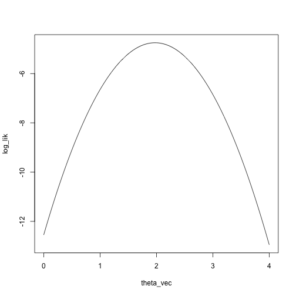
Taylor approximation:
theta_0 = 0
taylor_approx = function(theta, theta_0, loglik, dloglik, d2loglik, x) {
loglik(theta_0, x) + dloglik(theta_0, x) * (theta - theta_0) + .5 * d2loglik(theta_0, x) * (theta - theta_0)^2
}
loglik_norm = function(theta, x) sum(log(dnorm(x, mean = theta, sd = 1)))
dloglik_norm = function(theta, x) sum(x - theta)
d2loglik_norm = function(theta, x) -length(x)
taylor_approx_vector = sapply(theta_vec, taylor_approx, theta_0 = 0, loglik = loglik_norm, dloglik = dloglik_norm, d2loglik = d2loglik_norm, x = x)
plot(log_lik ~ theta_vec, pch = 2)
points(taylor_approx_vector ~ theta_vec, col = 'red')
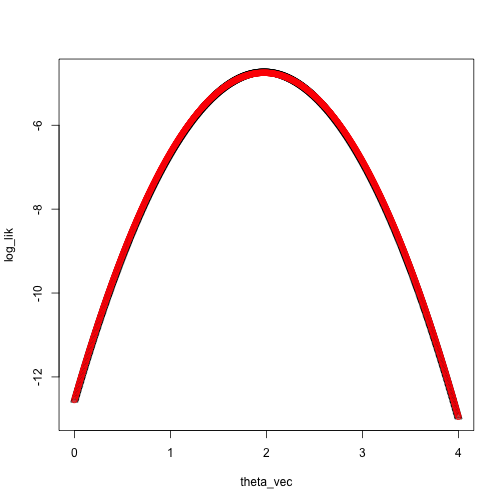
Example 2: Negative binomial
\[
x_1,\ldots, x_n \sim NB(.5, \theta)
\]
Likelihood: \[
\begin{align*}
L(\theta) &= \prod_{i=1}^n \frac{(x_i + \theta - 1)!}{(\theta-1)! x_i!} \left( \frac{1}{2} \right)^{x_i + \theta} \\
&= \prod_{i=1}^n \frac{\Gamma(x_i + \theta)}{\Gamma(\theta) x_i!} \left( \frac{1}{2} \right)^{x_i + \theta}
\end{align*}
\]
Log likelihood: \[
\ell(\theta) = \sum_{i=1}^n \log \Gamma(x_i + \theta) - \log(x_i!) - \log \Gamma(\theta) + (x_i + \theta) \log(1/2)
\]
First derivative: \[
\ell'(\theta) = \sum_{i=1}^n \psi^{(0)}(x_i + \theta)- \psi^{(0)} (\theta) + \log(1/2)
\]
Second derivative \[
\ell''(\theta) = \sum_{i=1}^n \psi^{(1)} (x_i + \theta) - \psi^{(1)} (\theta)
\]
Newton step:
\[
\begin{align*}
\theta_{m+1} &= \theta_m -\ell'(\theta_m) / \ell''(\theta_m)\\
&= \theta_m - \frac{\sum_{i=1}^n(\psi^{(0)}(x_i + \theta_m)- \psi^{(0)} (\theta_m) + \log(1/2))}{\sum_{i=1}^n (\psi^{(1)} (x_i + \theta_m) - \psi^{(1)} (\theta_m)) }
\end{align*}
\]
Let’s look at the log likelihood and the Taylor approximation of the log likelihood starting at \(\theta_0 = 7\):
set.seed(0)
x = rnbinom(n = 5, size = 4, prob = .5)
theta_vec = seq(1, 10, length.out = 1000)
log_lik = sapply(theta_vec, function(theta) sum(log(dnbinom(x, size = theta, prob = .5))))
plot(log_lik ~ theta_vec, type = 'l')
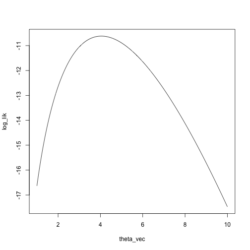
loglik_nbinom = function(theta, x) sum(log(dnbinom(x, size = theta, prob = .5)))
dloglik_nbinom = function(theta, x) sum(digamma(x + theta) - digamma(theta) + log(.5))
d2loglik_nbinom = function(theta, x) sum(trigamma(x + theta) - trigamma(theta))
taylor_approx_vector = sapply(theta_vec, taylor_approx, theta_0 = 7, loglik = loglik_nbinom, dloglik = dloglik_nbinom, d2loglik = d2loglik_nbinom, x = x)
plot(log_lik ~ theta_vec, type = 'l', xlim = c(0, 10), ylim = c(-20, -8))
points(taylor_approx_vector ~ theta_vec, type = 'l', col = 'red')
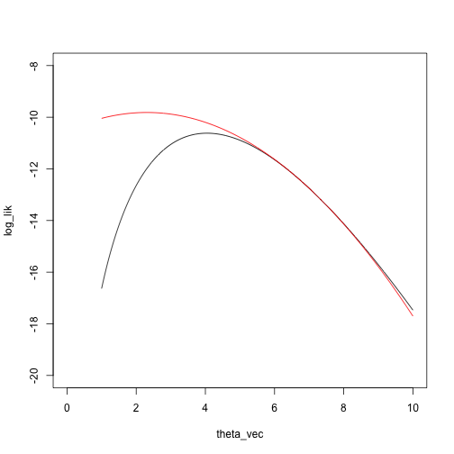
What is the maximizing point?
theta_vec[which.max(taylor_approx_vector)]
## [1] 2.306306
theta_0 = 7
theta_1 = theta_0 - dloglik_nbinom(theta_0, x) / d2loglik_nbinom(theta_0, x)
theta_1
## [1] 2.307302
taylor_approx_vector = sapply(theta_vec, taylor_approx, theta_0 = theta_1, loglik = loglik_nbinom, dloglik = dloglik_nbinom, d2loglik = d2loglik_nbinom, x = x)
plot(log_lik ~ theta_vec, type = 'l', xlim = c(0, 10), ylim = c(-20, -8))
points(taylor_approx_vector ~ theta_vec, type = 'l', col = 'red')
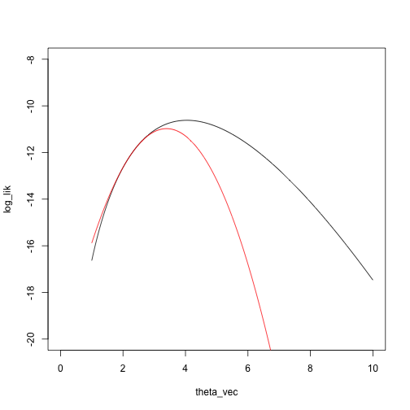
Another Newton step:
theta_2 = theta_1 - dloglik_nbinom(theta_1, x) / d2loglik_nbinom(theta_1, x)
theta_2
## [1] 3.393864
taylor_approx_vector = sapply(theta_vec, taylor_approx, theta_0 = theta_2, loglik = loglik_nbinom, dloglik = dloglik_nbinom, d2loglik = d2loglik_nbinom, x = x)
plot(log_lik ~ theta_vec, type = 'l', xlim = c(0, 10), ylim = c(-20, -8))
points(taylor_approx_vector ~ theta_vec, type = 'l', col = 'red')
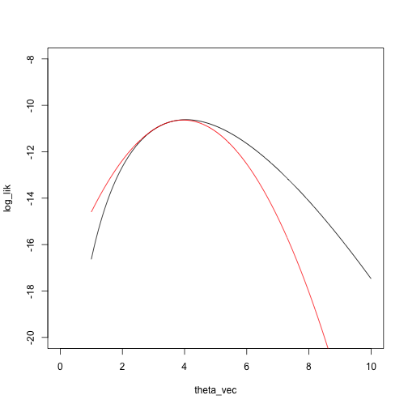
Example 3: Mixture model
Mixture model
\(x_1, \ldots, x_n\) come from a distribution with cumulative distribution function \(\theta G + (1 - \theta)H\), where \(G\) and \(H\) are two fixed, distributions (for example, two normal distributions with known means and variances, or two Poisson distributions with different means).
Let \(\xi\) denote the mean of \(G\) and \(\eta\) denote the mean of \(H\).
We want to estimate the mixing parameter \(\theta\).
For example, we can visualize the density for a mixture of a \(N(0, .5)\) and a \(N(3, 2.5)\) distribution with mixing parameter \(\theta = .2\):
mean_G = 0
mean_H = 3
sd_G = .5
sd_H = 2.5
q_seq = seq(-3, 8, length.out = 1000)
g = dnorm(q_seq, mean = mean_G, sd = sd_G)
h = dnorm(q_seq, mean = mean_H, sd = sd_H)
theta = .2
plot(theta * g + (1 - theta) * h ~ q_seq, type = 'l')
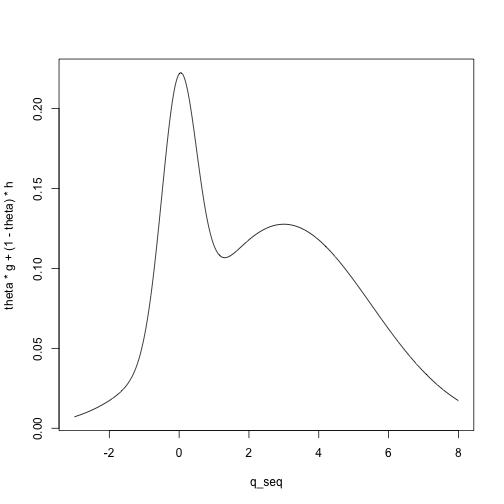
Let \(\phi_1(x)\) denote the density of a \(N(0, .5)\) and \(\phi_2(x)\) denote the density of a \(N(3,2.5)\) distribution.
Then we have
\[
x_1,\ldots, x_n \sim \theta \phi_1 + (1 - \theta) \phi_2
\]
Likelihood: \[
L(\theta) = \prod_{i=1}^n (\theta \phi_1(x_i) + (1 - \theta)\phi_2(x_i))
\]
Log likelihood: \[
\ell(\theta) = \sum_{i=1}^n \log(\theta \phi_1(x_i) + (1 - \theta)\phi_2(x_i))
\]
First derivative: \[
\ell'(\theta) = \sum_{i=1}^n \frac{\phi_1(x_i) - \phi_2(x_i)}{\theta \phi_1(x_i) + (1 - \theta) \phi_2(x_i)}
\]
Second derivative \[
\ell''(\theta) = -\sum_{i=1}^n\frac{ (\phi_1(x_i) - \phi_2(x_i))^2}{(\theta \phi_1(x_i) + (1 - \theta) \phi_2(x_i))^2}
\]
Newton step:
\[
\begin{align*}
\theta_{m+1} &= \theta_m -\ell'(\theta_m) / \ell''(\theta_m)\\
&= \theta_m + \frac{\sum_{i=1}^n \frac{\phi_1(x_i) - \phi_2(x_i)}{\theta_m \phi_1(x_i) + (1 - \theta_m) \phi_2(x_i)}}{\sum_{i=1}^n\frac{ (\phi_1(x_i) - \phi_2(x_i))^2}{(\theta_m \phi_1(x_i) + (1 - \theta_m) \phi_2(x_i))^2}}
\end{align*}
\]
Again: log likelihood and the Taylor approximation of the log likelihood
x = c(-.5,.2,.2,.1,.2,3,3,4,3,4)
theta_vec = seq(0, 1, length.out = 1000)
phi1 = function(x) dnorm(x, mean = 0, sd = .5)
phi2 = function(x) dnorm(x, mean = 3, sd = 2.5)
mixture_density = function(theta, x)
theta * phi1(x) + (1 - theta) * phi2(x)
log_lik = sapply(theta_vec, function(theta) sum(log(mixture_density(theta, x))))
plot(log_lik ~ theta_vec, type = 'l', ylim = c(-40, -15))
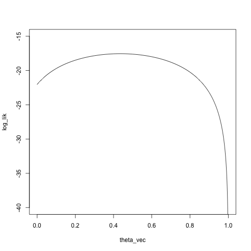
We’ll start at a pretty bad point, \(\theta_0 = .95\):
loglik_mixture = function(theta, x)
sum(log(mixture_density(theta, x)))
dloglik_mixture = function(theta, x)
sum((phi1(x) - phi2(x)) / (theta * phi1(x) + (1 - theta) * phi2(x)))
d2loglik_mixture = function(theta, x)
-sum((phi1(x) - phi2(x))^2 / (theta * phi1(x) + (1 - theta) * phi2(x))^2)
taylor_approx_vector = sapply(theta_vec, taylor_approx, theta_0 = .95, loglik = loglik_mixture, dloglik = dloglik_mixture, d2loglik = d2loglik_mixture, x = x)
plot(log_lik ~ theta_vec, type = 'l', ylim = c(-40, -15))
points(taylor_approx_vector ~ theta_vec, type = 'l', col = 'red')
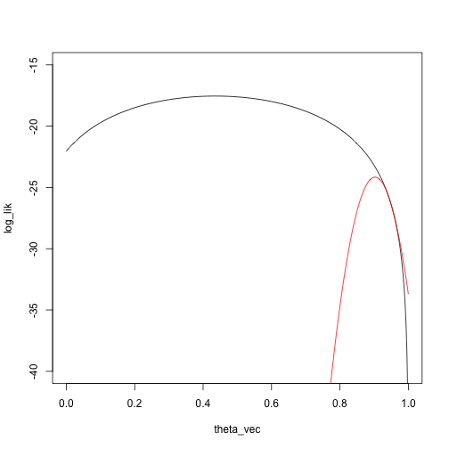
What is the maximizing point?
theta_vec[which.max(taylor_approx_vector)]
## [1] 0.9029029
theta_0 = .95
theta_1 = theta_0 - dloglik_mixture(theta_0, x) / d2loglik_mixture(theta_0, x)
theta_1
## [1] 0.9024169
Then do a Taylor approximation around \(\theta_1\):
taylor_approx_vector = sapply(theta_vec, taylor_approx, theta_0 = theta_1, loglik = loglik_mixture, dloglik = dloglik_mixture, d2loglik = d2loglik_mixture, x = x)
plot(log_lik ~ theta_vec, type = 'l', ylim = c(-40, -15))
points(taylor_approx_vector ~ theta_vec, type = 'l', col = 'red')
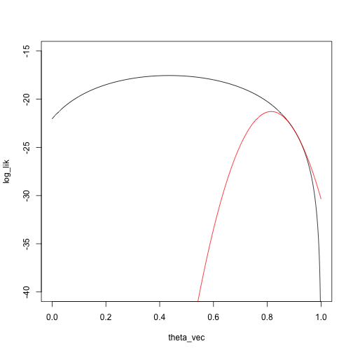
And another Newton step:
theta_2 = theta_1 - dloglik_mixture(theta_1, x) / d2loglik_mixture(theta_1, x)
theta_2
## [1] 0.8148403
Another Taylor approximation/Newton step:
taylor_approx_vector = sapply(theta_vec, taylor_approx, theta_0 = theta_2, loglik = loglik_mixture, dloglik = dloglik_mixture, d2loglik = d2loglik_mixture, x = x)
plot(log_lik ~ theta_vec, type = 'l', ylim = c(-40, -15))
points(taylor_approx_vector ~ theta_vec, type = 'l', col = 'red')
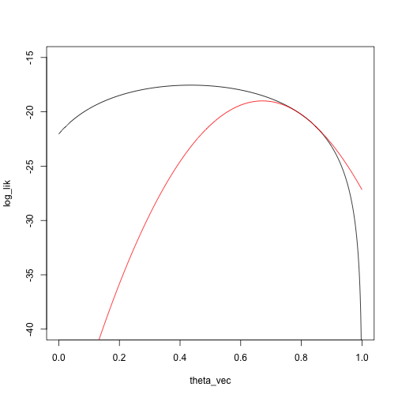
theta_3 = theta_2 - dloglik_mixture(theta_2, x) / d2loglik_mixture(theta_2, x)
theta_3
## [1] 0.6714755
Potential issues
How do you choose starting values?
What if the function has no derivative/second derivative?
What if the function has no curvature in some regions?
How do you know you will converge to a maximum and not a minimum?
Multiple parameters: notation
Suppose we have \(p\) paramaters.
\(\theta\): The parameters, a vector in \(\mathbb R^p\).
\(\ell (\theta)\): The log likelihood at \(\theta\), an element of \(\mathbb R\).
\(d \ell(\theta)\): A vector in \(\mathbb R^p\) of first derivatives of the log likelihood at \(\theta\).
\(d^2 \ell(\theta)\): A matrix in \(\mathbb R^{p\times p}\) containing the second partial derivatives of \(\ell\).
Multiple parameters: algorithm
Our goal: Find the value of \(\theta\) that maximizes \(\ell(\theta)\).
Given that we are at a point \(\theta_n\), one Newton step is given by
\[
\theta_{n+1} = \theta_n - d^2 \ell(\theta_n)^{-1} d \ell(\theta_n)
\]
Newton’s method algorithm:
Start at a point \(\theta_0\)
Iterate \(\theta_{n+1} = \theta_n - d^2 \ell(\theta_n)^{-1} d \ell(\theta_n)\) until some stopping criterion is reached.
Usually stop when the derivative is sufficiently close to zero.
Same derivation and intuition as the one-parameter case: we make a second-order Taylor approximation to the log likelihood and maximize that.
Newton’s method for multiple parameters has the same issues as with one parameter:
How do you choose a starting point?
What if the second derivative matrix doesn’t exist?
What if the second derivative matrix isn’t invertible?
How do you know the function converges to a maximum and not a minimum?
In addition, we have the problem of inverting the Hessian, this scales badly with \(p\), the number of parameters. (Usually think of as \(O(p^3)\), but computer scientists have worked really hard and gotten \(O(p^{2.4ish})\))
Several ways of choosing starting points, but one way that often works is method of moments.
Method of moments
Same problem as maximum likelihood: we have a family of probability models, indexed by a scalar or vector \(\theta\), and we need to choose one to describe the data.
Idea:
If \(\theta\) is a \(k\)-dimensional vector (we have \(k\) parameters to estimate), derive expressions for the first \(k\) moments of the data, \(E_\theta(X^r)\), \(r = 1,\ldots, k\)
Compute the first \(k\) empirical moments of the data:
\[
\frac{1}{n} \sum_{i=1}^n x_i^r, \quad r = 1,\ldots, k
\]
\(\hat \theta\) is the value of \(\theta\) such that the empirical moments match the theoretical moments:
\[
E_{\hat \theta}(X^r) = \sum_{i=1}^n x_i^r, \quad r = 1,\ldots, k
\]
Example: moment estimator for normal family
Our family of distributions is \(N(\mu, \sigma^2)\), so that \(\theta = (\mu, \sigma)\).
The first two moments are:
\(E_{\mu, \sigma}(X) = \mu\)
\(E_{\mu, \sigma}(X^2) = \mu^2 + \sigma^2\)
Equate the first theoretical moment to the first data moment tells us that \(\hat \mu\) should satisfy
\[
E_{\hat \mu,\hat \sigma}(X) = \hat \mu = \frac{1}{n} \sum_{i=1}^n x_i
\] and so \(\hat \mu = \frac{1}{n} \sum_{i=1}^n x_i\)
Then equating the second theoretical moments to the second data moment tells us that \(\hat \mu\) and \(\hat \sigma\) should satisfy \[
E_{\mu, \sigma}(X^2) = \mu^2 + \sigma^2 = \frac{1}{n} \sum_{i=1}^n x_i^2
\] Plugging in \(\hat \mu = \sum_{i=1}^n x_i\) and solving gives us \[
E_{\hat \mu, \hat \sigma}(X^2) = \hat \mu^2 + \hat \sigma^2 \\
= (\frac{1}{n} \sum_{i=1}^n x_i)^2 + \hat \sigma^2\\
=\frac{1}{n}\sum_{i=1}^n x_i^2
\] and so \(\hat \sigma^2 = \frac{1}{n}\sum_{i=1}^n x_i^2 - (\frac{1}{n}\sum_{i=1}^n x_i)^2\).
If you do a little more algebra, you can see that this is a standard estimate of the variance.
Example: moment estimator for mixture models
Mixture model
\(x_1, \ldots, x_n\) come from a distribution with cumulative distribution function \(\theta G + (1 - \theta)H\), where \(G\) and \(H\) are two fixed, distributions (for example, two normal distributions with known means and variances, or two Poisson distributions with different means).
Let \(\xi\) denote the mean of \(G\) and \(\eta\) denote the mean of \(H\).
We want to estimate the mixing parameter \(\theta\).
For example, we can visualize the density for a mixture of a \(N(0, .5)\) and a \(N(3, 2.5)\) distribution with mixing parameter \(\theta = .2\):
mean_G = 0
mean_H = 3
sd_G = .5
sd_H = 2.5
q_seq = seq(-3, 8, length.out = 1000)
g = dnorm(q_seq, mean = mean_G, sd = sd_G)
h = dnorm(q_seq, mean = mean_H, sd = sd_H)
theta = .2
plot(theta * g + (1 - theta) * h ~ q_seq, type = 'l')

We have one parameter, so we compute the first theoretical moment: \[
E_\theta(X) = \theta \xi + (1 - \theta) \eta
\]
Then we equate that moment to the first data moment to get our estimate: \[
\hat \theta \xi + (1 - \hat \theta) \eta = \frac{1}{n} \sum_{i=1}^n x_i\\
\hat \theta = \frac{\frac{1}{n} \sum_{i=1}^n x_i - \eta}{\xi - \eta}
\]
There isn’t anything particularly important about the first \(k\) moments, can match other aspects of the data
We are thinking of these as starting values for maximum likelihood estimation, but they are usually reasonable estimators in their own right.
The idea of matching data statistics to expected values of statistics will come up again in approximate Bayesian computation.